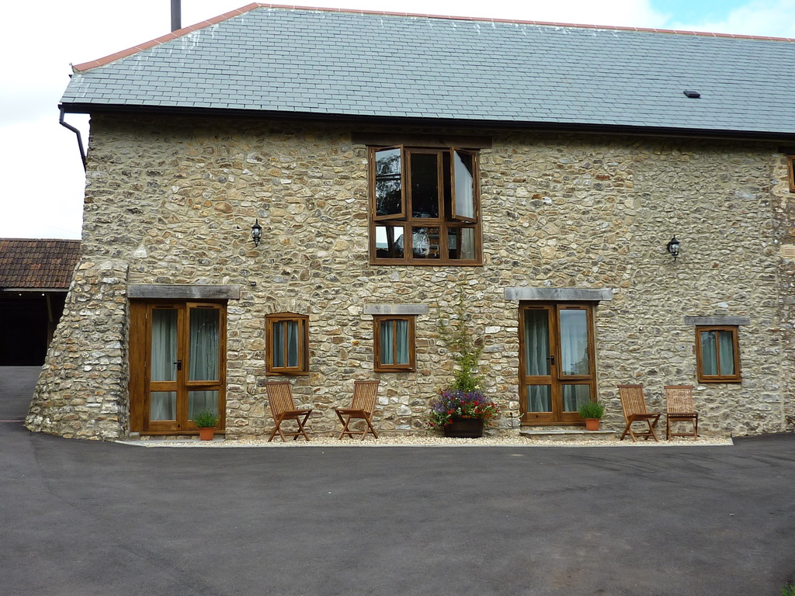

Cider Press

Overview
- 3 bedrooms - sleeps 6, ideal for 3 couples or families , 1 double en - suite wet room, 2 double/twins with bathroom
- Up side down (bedrooms down stairs)
- Under floor heating throughout
- Garden furniture on patio and sun loungers
- Woodburnig stove
- Trees farmland views
- Oak floors in living room
Entrance & Garden
You approach the "Cider Press" along the drive past the lawn/patio garden to a small yard with flower tubs around where you can park your car. Up 4 small steps and you enter through a large stable door into the living room. On the south side there is a lawn with patio & garden table/chairs for 6 people.
Living/Kitchen room
The living room is open plan with oak floors and has views of the garden surrounded by trees and farmland where you can hear lots of bird song in the mornings. There is a woodburner to enjoy on those autumn /winter stays with TV/DVD and a large leather suite. The dining area has a oak table with 6 chairs. A well planned kitchen with plenty of fitted cupboards, double oven, hob, dishwasher, fridge, microwave, toaster & kettle. A door leads into a utility with freezer, a sink, washing machine & tumble dryer.
Bedrooms
The staircase leads down from the living room to a lobby area where there is a large fitted cupboard for any luggage. A family bathroom with a shower over the bath and heated towel rail. Bedroom 1 - has a en-suite wetroom, 5' bed, bedroom furniture, TV/DVD. A glass door to the garden and small patio with garden chairs to enjoy that morning cup of tea, listen to bird song and enjoy the countryside views. Bedroom 2 - is a double 6ft or 2 x 3ft beds, bedroom furniture & TV/DVD. A glass door leads to the patio. Bedroom 3 - has a double 5ft or 2 x 2'6'', bedroom furniture & TV.
- 3 bedrooms - sleeps 6, ideal for 3 couples or families , 1 double en - suite wet room, 2 double/twins with bathroom
- Up side down (bedrooms down stairs)
- Under floor heating throughout
- Garden furniture on patio and sun loungers
- Woodburnig stove
- Trees farmland views
- Oak floors in living room


{kind=link}
{kind=link}
{kind=link}
{kind=link}
{kind=link}
{kind=link}
{kind=link}